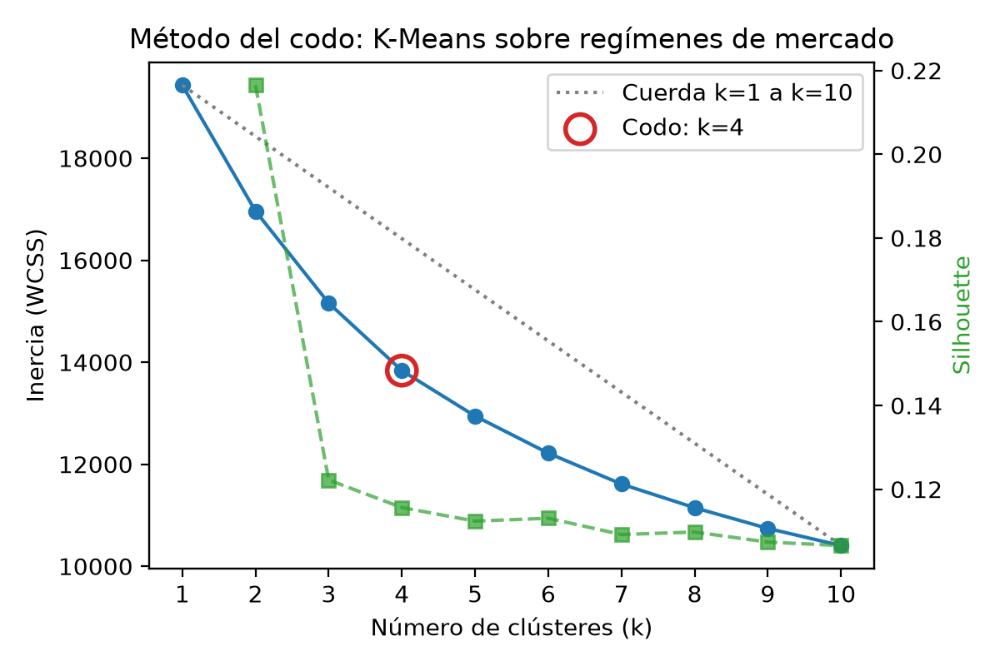

TRM Predict: sistema en la nube para anticipar el riesgo cambiario en compras de iPhone en Colombia · avance de Minería de Datos
Proyecto integrador, V semestre. Universidad Santo Tomás, Tunja. Noviembre de 2026.
Repositorio: github.com/Sebas-409/proyecto-integrador-trm
1. De qué se trata
La TRM es el precio oficial del dólar en Colombia. Queremos ver si con datos de otros mercados
(petróleo, bitcoin, índice del dólar, bolsa de EE. UU., miedo del mercado o VIX y otras monedas de la región)
se puede saber cómo se va a mover la TRM y en qué "tipo de mercado" estamos cada día.
2. Datos
2.159 días hábiles, del 7 de septiembre de 2017 al 17 de octubre de 2026.
Fuentes: TRM oficial (datos.gov.co) y precios diarios de Brent, VIX, DXY, S&P 500, bono a 10 años de EE. UU.,
bitcoin, ethereum y las monedas de Brasil y México.
Con esos precios calculamos variables sencillas: cuánto cambió cada mercado en 5 días y qué tanto se movió
en los últimos 20 días (volatilidad).
3. Lo que ya estaba hecho
3.1 Predecir si la TRM sube o baja mañana
Probamos regresión logística, KNN, SVM y random forest. Ninguno le gana al azar: el AUC queda cerca de 0,50.
La conclusión es que el movimiento del día siguiente casi no se puede adivinar con estos datos. Es un resultado
esperado en mercados de divisas, y por eso cambiamos el enfoque hacia agrupar días parecidos.
3.2 K-Means: agrupar días parecidos
Usamos 9 variables (volatilidad y cambios de 5 días de la TRM, VIX, dólar global, petróleo, bitcoin y S&P 500).
Con el método del codo el número de grupos que mejor equilibra simplicidad y detalle es k = 4.

Método del codo: la curva se dobla en k = 4.
Grupo
Qué pasa en esos días
Días
% del total
Calma
Poco movimiento en la TRM y en los demás mercados.
752
34,8 %
Apetito por riesgo
Los inversionistas compran activos de riesgo; el peso se fortalece.
754
34,9 %
Aversión al riesgo
Los inversionistas buscan refugio en el dólar; la TRM sube.
606
28,1 %
Crisis
Movimientos muy fuertes (por ejemplo, marzo de 2020).
47
2,2 %
3.3 Revisión del K-Means por fases
Seguimos la guía del profesor en 6 fases: análisis de los datos, inicio con k-means++, estabilidad de los grupos
con distintas semillas, relación con variables que no se usaron para agrupar y una acción sugerida para cada grupo.
El detalle está en docs/kmeans/TRM_Predict_KMeans_Fases.pdf.
4. Nuevo en este avance: reglas con un árbol de decisión
El K-Means dice a qué grupo pertenece cada día, pero no explica por qué. Para responder eso entrenamos
un árbol de decisión pequeño que aprende a reconocer el grupo de cada día. El resultado son reglas que cualquiera
puede leer.
Cómo se hizo
Tomamos los 2.159 días con el grupo que les dio el K-Means.
Separamos los días al azar: 75 % para entrenar el árbol y 25 % para probarlo, con la misma proporción de cada grupo.
Dejamos el árbol en 3 niveles para que las reglas sean cortas.
Código: src/pipeline/tree_rules.py.
Árbol de decisión. Cada caja es una pregunta: si se cumple se va a la izquierda (True), si no a la derecha (False). Las de abajo dicen el grupo; el porcentaje es la parte de los días que llega a esa caja.
Resultados
Acierto en los días de prueba: 74 % (540 días). Si se adivinara al azar sería alrededor del 25 %.
Las variables que más pesan son el cambio de la TRM en 5 días (37 %) y la volatilidad de la TRM en 20 días (34 %).
Le siguen el VIX (14 %), la volatilidad de bitcoin (8 %) y la del petróleo (7 %).
El dólar global, el S&P 500 y los cambios de petróleo y bitcoin no se usaron en ninguna regla.
Las reglas en palabras
Si...
Entonces el día es...
La TRM se ha movido poco (volatilidad ≤ 0,6 %), el petróleo también está tranquilo y el VIX no subió mucho
Calma
La TRM se ha movido bastante pero no subió en la última semana y bitcoin está tranquilo
Apetito por riesgo
La TRM se ha movido bastante, subió en la semana y el VIX (miedo del mercado) no bajó
Aversión al riesgo
Errores del árbol (matriz de confusión, días de prueba)
Grupo real \ Árbol dice
Calma
Apetito
Aversión
Crisis
Calma
152
15
21
0
Apetito por riesgo
29
154
6
0
Aversión al riesgo
36
22
93
0
Crisis
4
4
4
0
Limitación: el árbol nunca reconoce el grupo Crisis, porque solo hay 47 días de crisis (2 %)
y con 3 niveles no alcanza a separarlos. Para el siguiente avance se puede probar darle más peso a ese grupo
o dejar un nivel más.
5. Conclusiones
Adivinar si la TRM sube o baja mañana no funciona mejor que lanzar una moneda.
Sí se pueden encontrar 4 tipos de mercado, y un árbol sencillo los explica con 74 % de acierto usando
sobre todo lo que ha hecho la propia TRM y el VIX.
Estas reglas sirven para mostrarle al usuario del tablero en qué tipo de mercado estamos hoy sin explicar el K-Means.
6. Siguientes pasos
Mejorar la detección de días de Crisis.
Mostrar el grupo del día y su regla en el tablero web.